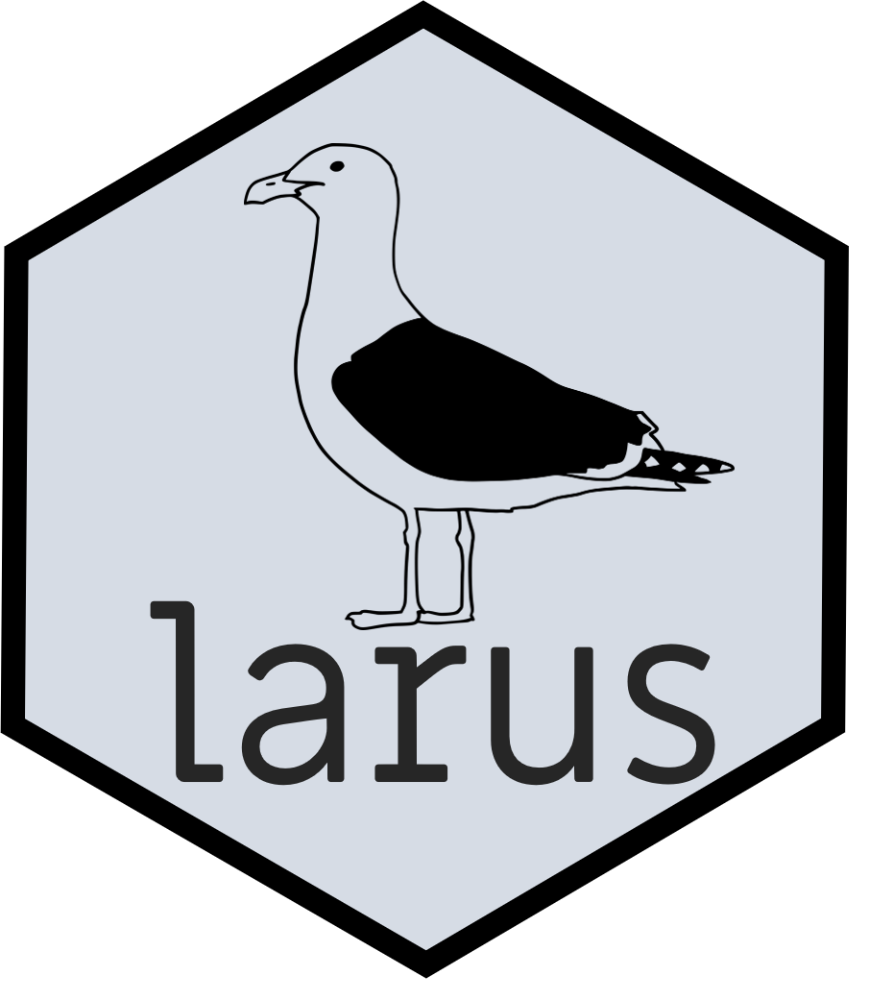
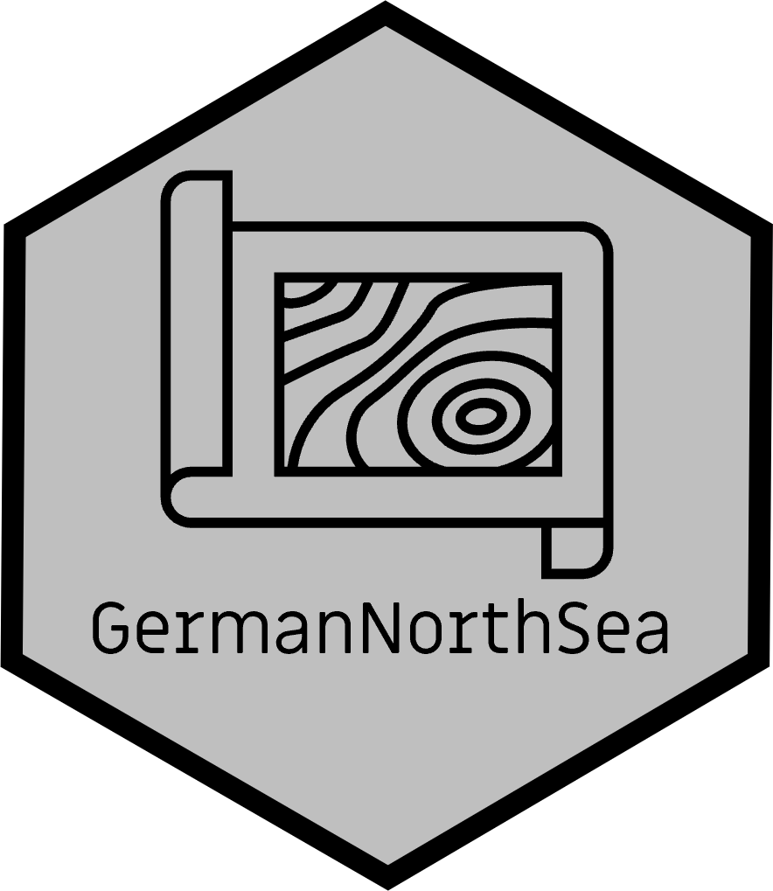
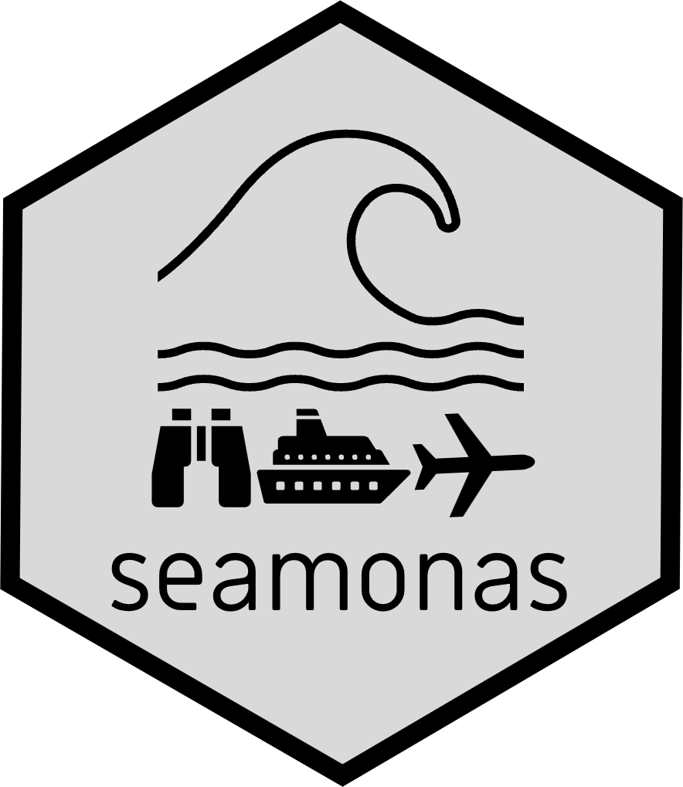
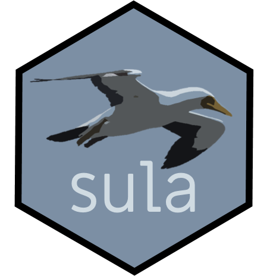
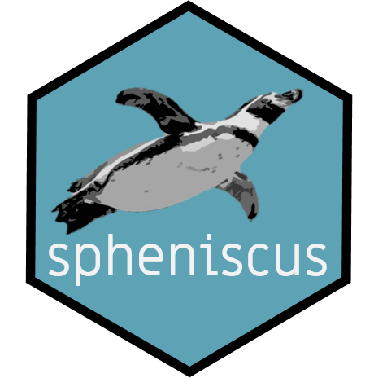

My list of packages
I develop R packages that are useful for my work. I’m often working on new packages so stay tuned.
larus
This package specializes in GPS-GSM tracking data, focusing on gulls (Larus spp.) with devices that transmit data remotely and usually need no post-retrieval correction. It offers tools for data manipulation, automated trip identification, and calculation of key movement parameter. Because gulls are unpredictable, moving between roosting sites this package helps researchers understand their complex and variable behaviors.
The package contains functions to:
- Check battery charge. Monitor the battery levels to identify potential data loss or reduced sampling frequency caused by low power.
- Check gaps (intervals) in the data. Examine the time intervals between consecutive data points to detect missing data segments or irregular sampling, which can affect the accuracy of movement analysis.
- Check shifts in central locations. Identify changes or drifts in the central reference points (e.g., nesting or roosting sites), as these can influence trip segmentation and complicate the identification of foraging behavior.
- Interpolate or sub-sample. Apply interpolation methods to fill small gaps in the data for continuous movement paths, or sub-sample data to standardize time intervals, improving comparability and analysis consistency.
- Calculate trip parameters such as duration, maximum distance, and path length.
For detailed instructions go to: https://github.com/MiriamLL/larus
GermanNorthSea
This package provides easy access to shapefiles for the North Sea region, essential for spatial analyses and mapping in marine research. Seamlessly integrated with R, it enables users to quickly incorporate these datasets into workflows and create detailed, customizable maps with minimal effort. This accelerates data exploration while ensuring reproducibility and consistency, making it easy to generate maps repeatedly for reports, publications, or decision-making.

The package contains:
- Detailed shapefiles covering the German North Sea, such as administrative boundaries, marine protected areas, shipping lanes, and other relevant geographic features.
You can install the package GermanNorthSea from GitHub with:
devtools::install_github("MiriamLL/GermanNorthSea")Detailed information and uses: https://github.com/MiriamLL/GermanNorthSea.
For referencing, please use the original resources and links provided in the githubpage for the different shapefiles.
seamonas
The package seamonas provides easy and streamlined access to information based on established guidelines for monitoring seabirds at sea. It includes detailed table content along with a comprehensive sample dataset to support practical implementation and data analysis. The information is derived from the HELCOM Monitoring Guidelines for Seabirds at Sea and is linked to the ESAS database, ensuring users have reliable and standardized reference material.

The package seamonas contains:
- A list of 549 species across morphological separated groups.
- Harmonized column names and guidance for completing each entry.
- Unified descriptions for field entries, includes abiotic structures, activity codes, associations.
- One trip example from a monitoring containing basic trip information.
- One survey example from a monitoring containing survey information.
- One survey example from a monitoring containing species detected and specifications.
Detailed information and uses: https://github.com/MiriamLL/seamonas
You can install the development version of seamonas from GitHub with:
devtools::install_github("MiriamLL/seamonas")sula
This package specializes in GPS data from recovered tracking devices, offering tools for analyzing animal movement. It includes example datasets from masked boobies (Sula dactylatra) tracked on Rapa Nui (Easter Island), and provides functions for data cleaning, trip identification, and calculation of key movement parameters such as trip duration, total distance, and path length.

The package contains:
- Data from GPS collected from masked booby at Rapa Nui, Chile.
- Thirteen functions to clean and calculate trip parameters from GPS data.
Detailed information and uses: https://github.com/MiriamLL/sula
You can install the development version of sula from GitHub with:
devtools::install_github("MiriamLL/sula")Created in 2020, updated in 2025, after replacing rgeos with sf.
spheniscus
Designed for the analysis of TDR (Time-Depth Recorder) data from recovered loggers, this package includes example datasets from Humboldt penguins (Spheniscus humboldti) studied on Tilgo Island, Chile. It provides a comprehensive suite of tools for data preprocessing, dive detection, correction of zero-depth values, visualization, and the calculation of key diving metrics.

The package contains:
- Data from TDR collected from Humboldt penguins at Tilgo Island, Chile.
- Functions to clean data and obtain diving parameters from TDR data.
Detailed information and uses: https://github.com/MiriamLL/spheniscus
You can install the development version of spheniscus from GitHub with:
devtools::install_github("MiriamLL/speniscus")